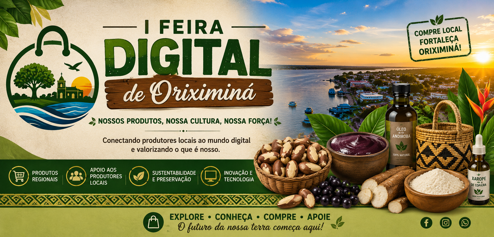
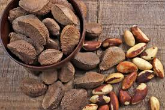
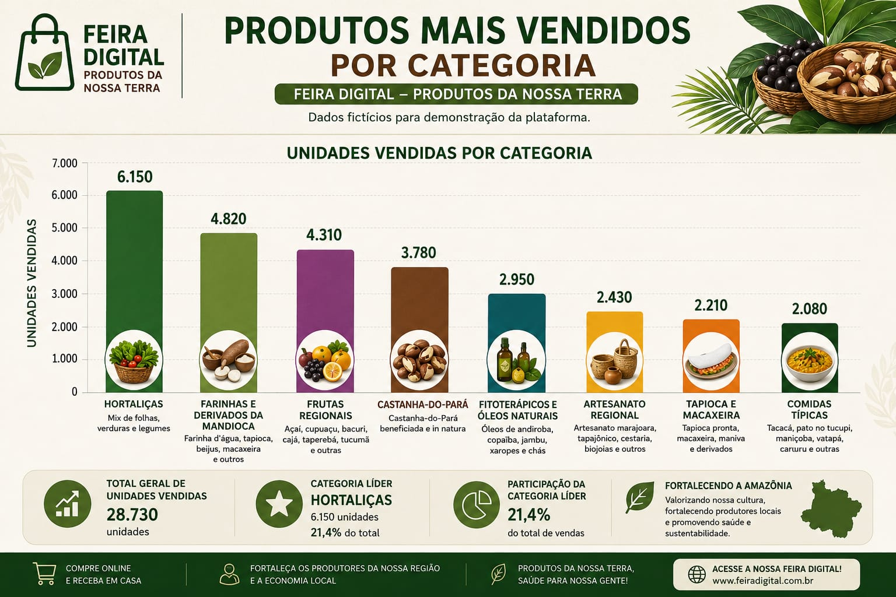

+100
Produtos cadastrados

Seja bem-vindo à I Feira Digital de Oriximiná, um espaço virtual criado para valorizar os produtores locais, incentivar o empreendedorismo e promover a riqueza cultural, gastronômica e artesanal do nosso município.
Aqui você encontra produtos regionais, histórias inspiradoras, oportunidades de negócios e muito mais. Nossa missão é aproximar produtores e consumidores por meio da tecnologia.
Produtos cadastrados
Produtores locais
Categorias disponíveis
Peças artesanais produzidas por artistas locais.
Óleos, xaropes e produtos naturais.
Verduras, legumes e produtos orgânicos.
Farinha d'água, tapioca, beiju e macaxeira.
Castanha beneficiada e in natura.
Açaí, cupuaçu, bacuri, cajá e outras frutas amazônicas.
Tacacá, vatapá, maniçoba e outras delícias regionais.

Um dos produtos mais valorizados da Amazônia, rico em nutrientes e produzido por trabalhadores da região.

O gráfico acima apresenta dados ilustrativos sobre as categorias mais comercializadas na Feira Digital de Oriximiná.
Localizada no oeste do Pará, Oriximiná possui grande riqueza cultural, ambiental e econômica. A Feira Digital busca divulgar os produtos locais e fortalecer a economia regional por meio da inclusão digital.
"A Feira Digital ajudou a divulgar meus produtos para mais pessoas."
— Produtor Local
"Uma excelente iniciativa para valorizar nossa região."
— Visitante